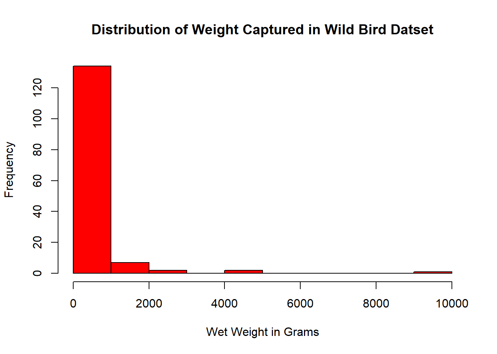
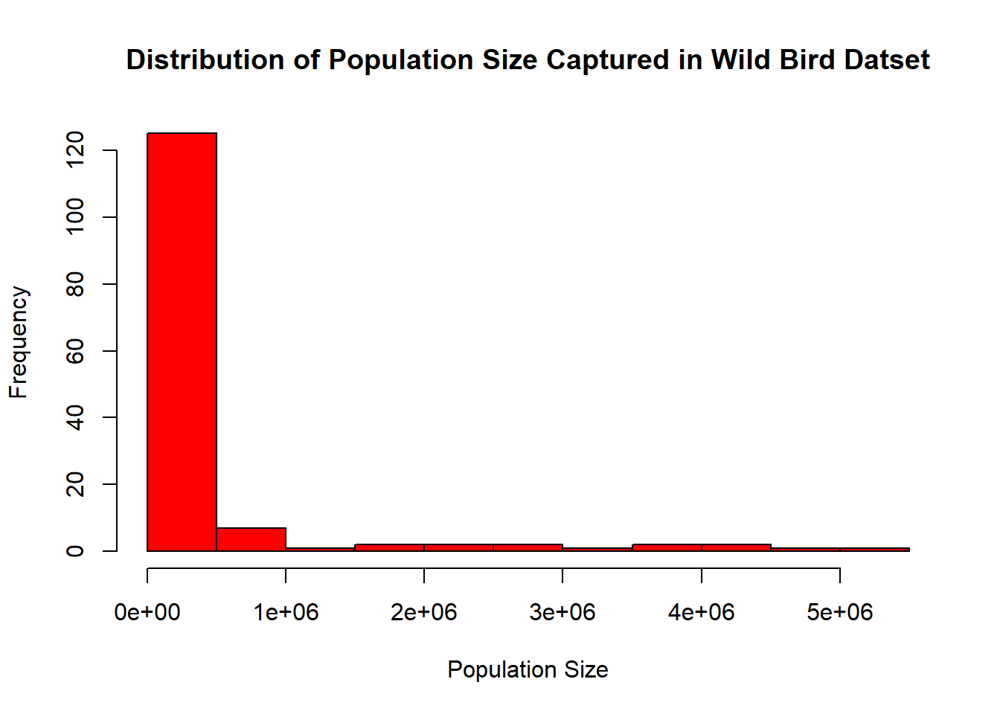
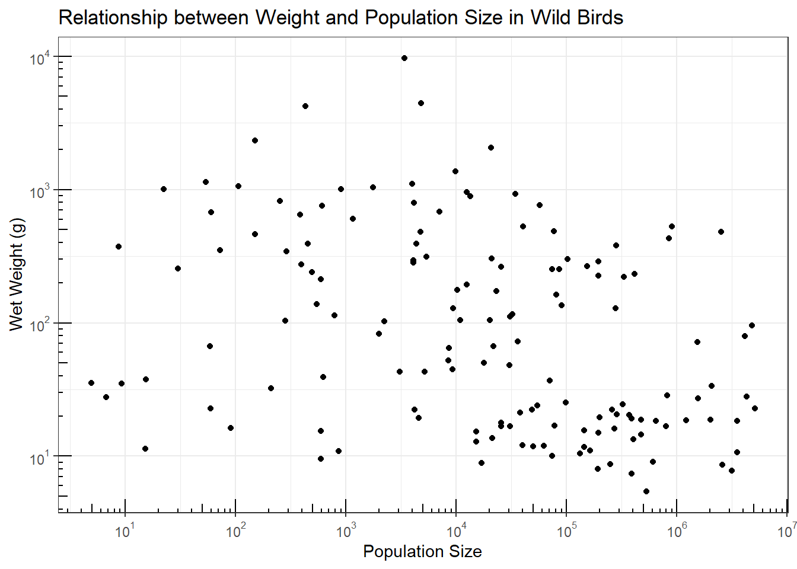

Both Variables are populated for all observations and represent a wide range of values. Distributions of weight and population size are positively skewed bu outliers.
Technical notes
Provide the following information:
- Print of first 23 observations
- Print of last 23 observations
- Filter on presence of missing values for wet_weight_g or pop_size
- Summarize numeric variables
hist( wild_bird_data2$wet_weight_g , main="Distribution of Weight Captured in Wild Bird Datset" , xlab="Wet Weight in Grams" , col ="red")

Code
hist( wild_bird_data2$pop_size , main="Distribution of Population Size Captured in Wild Bird Datset" , xlab ="Population Size" , col ="red")

Evaluate relationship between weight and population size graphically
Summary/Results
Plotting weight by population size does not clearly point to any relationship between these variables.
Technical notes
Plot results on log10 scale
Code
# Load packagesrequire(MASS) # to access Animals data setsrequire(scales) # to access break formatting functionslibrary(ggplot2)start_plot <-ggplot(wild_bird_data2, aes(x=pop_size, y=wet_weight_g)) +geom_point()start_plot2 <- start_plot +scale_x_log10(breaks =trans_breaks("log10", function(x) 10^x),labels =trans_format("log10", math_format(10^.x))) +scale_y_log10(breaks =trans_breaks("log10", function(x) 10^x),labels =trans_format("log10", math_format(10^.x))) +theme_bw() start_plot2 +annotation_logticks() +ggtitle("Relationship between Weight and Population Size in Wild Birds") +xlab("Population Size")+ylab("Wet Weight (g)")

Source Code
---title: "Challenge 1 Instructions"author: "Lauren Zichittella"desription: "Reading in data and creating a post"date: "02/18/2023"format: html: toc: true code-fold: true code-copy: true code-tools: truecategories: - challenge_1 - laurenzichittella - wild_bird_data---# Challenge 1 ## Read in the Data, wild_bird_data.xlsx ### Summary/Results This dataset was utilized by Nee et al to produce a figure to show the relationshipbetween wild bird weight and population size. It consists of two numeric variables, wet body weight in grams and population sizeand 146 distinct observations. ### Technical notes - Utilize read_xls - Skip import of first two rows - row 1 includes header - row 2 provides variable names I do not want to use - Assign new variable names: - Wet body weight [g] = wet_weight_g - Population size = pop_size - Output variable class - Sort by ascending values of wet_weight_g ```{r}#| label: setup#| warning: false#| message: falselibrary(tidyverse)knitr::opts_chunk$set(echo =TRUE, warning=FALSE, message=FALSE)library(readxl)wild_bird_data2 <-read_xlsx( "_data/wild_bird_data.xlsx", skip =2, col_names =c("wet_weight_g", "pop_size"))sapply(wild_bird_data2, class)arrange(wild_bird_data2,wet_weight_g)```## Provide baseline characterization of data ### Summary/Results Both Variables are populated for all observations and represent a wide range of values. Distributions of weight and population size are positively skewed bu outliers. ### Technical notesProvide the following information: - Print of first 23 observations - Print of last 23 observations - Filter on presence of missing values for wet_weight_g or pop_size - Summarize numeric variables ```{r}slice(wild_bird_data2, 1:23)slice(wild_bird_data2, 124:146)filter(wild_bird_data2, is.na(wet_weight_g) |is.na(pop_size))result='asis'library(summarytools)dfSummary(wild_bird_data2, varnumbers =FALSE, valid.col =FALSE)hist( wild_bird_data2$wet_weight_g , main="Distribution of Weight Captured in Wild Bird Datset" , xlab="Wet Weight in Grams" , col ="red")hist( wild_bird_data2$pop_size , main="Distribution of Population Size Captured in Wild Bird Datset" , xlab ="Population Size" , col ="red")```## Evaluate relationship between weight and population size graphically ### Summary/Results Plotting weight by population size does not clearly point to any relationship between these variables. ### Technical notesPlot results on log10 scale ```{r}# Load packagesrequire(MASS) # to access Animals data setsrequire(scales) # to access break formatting functionslibrary(ggplot2)start_plot <-ggplot(wild_bird_data2, aes(x=pop_size, y=wet_weight_g)) +geom_point()start_plot2 <- start_plot +scale_x_log10(breaks =trans_breaks("log10", function(x) 10^x),labels =trans_format("log10", math_format(10^.x))) +scale_y_log10(breaks =trans_breaks("log10", function(x) 10^x),labels =trans_format("log10", math_format(10^.x))) +theme_bw() start_plot2 +annotation_logticks() +ggtitle("Relationship between Weight and Population Size in Wild Birds") +xlab("Population Size")+ylab("Wet Weight (g)")```